Informant Overview
Informant is an integrated development environment for authoring, compiling, playing, and testing interactive fiction written with Inform 7.
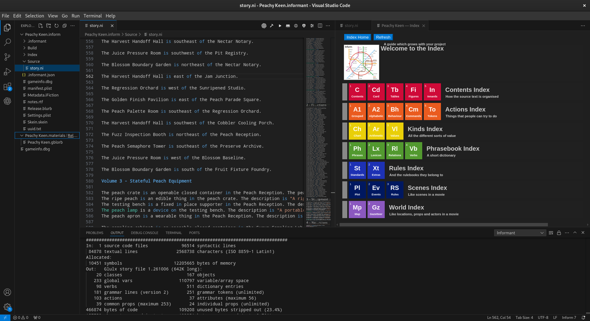
Setting it up is as easy as installing a VS Code extension. No additional installation of the standard Inform 7 IDE is required. Informant projects remain ordinary Inform projects and any Informant-specific state is kept separate from the story source so that the project itself remains recognizable and useful outside of Informant. Installing Informant will not affect or interfere with any other Inform tools you have set up on your computer. This means you can use Informant on the same system as the standard Inform 7 IDE or even tools like Vimform7.
Features
The Informant VS Code extension provides everything needed to develop and test an Inform work. Informant deliberately treats the compiler toolchain as part of the development environment. A separate system installation of Inform is not required for Informant’s normal build workflow. Below is a list of the main things you can do with Informant:
Create a new Inform project.
Open an existing Inform project.
Edit Inform source inside Visual Studio Code.
Compile a story using a managed Inform toolchain.
Play a story you are working on.
View compiler errors and build information.
Jump to line of code when errors are found.
Read the Inform documentation.
View the complete generated Inform world index.
Install
.i7xInform extensions.Record and replay skeins.
Build interaction vectors and record play sessions for testing.
Organize reusable tests into collections.
Run automated tests and compare captured output with expected output.
Export test results for later inspection.
Install, manage, and select Inform toolchains.
Clean generated project files.
Native compiler toolchains isolated from other Inform installations on the computer.
Users of the standard Inform IDE should feel at home with Informant. Many of the familiar workflows are available, including viewing documentation or playing a story alongside the source. Informant also supports the other side-by-side views commonly used while developing an Inform project. Skeins are the major exception: Informant uses them differently as part of its recording and testing workflow, as described later in this documentation.
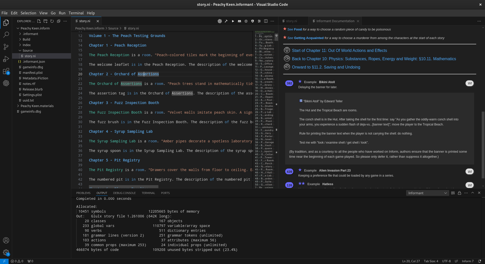
Operating System Support
As of release 1.0 Informant supports the following operating systems thanks to the broad compatibility of Inform/Inweb/Intest/Quixe and the VSCode editor:
macOS (Intel / Arm)
Windows (10 / 11)
Linux (RPM / DEB)
Attribution
Informant would not be possible without the hard work of many other people and I have a deep appreciation for the effort the community has put into keeping the Inform ecosystem moving forward. All code, binaries, and documentation associated with Inform, Inweb, Intest, Quixe, Inblorb, Inform IDE, and the Inform Extension libraries fall under the licensing established by their respective owners.
You can learn more about these projects at the following links:
Getting Started
Requirements
Informant requires:
Visual Studio Code.
The Informant Visual Studio Code extension.
The Inform compiler does not need to be installed separately. Informant can install and manage its own toolchains.
Installing VSCode
If you are not familiar with VSCode, you will want to review the two links below. The first link explains how to install VSCode for your computer and there are detailed steps for Windows, macOS, and Linux documented. The second link explains something I feel can be a little confusing about VSCode the first time you use it… workspace “trust”. In short workspace “trust” is an action you will take the first time you set up a new project folder to begin your IF work. My recommendation is to make a single folder to hold all of your various IF works and to establish trust for that top level folder.
Installing Informant
Install Informant through the Visual Studio Code Extensions view. Open the
Extensions view, search for Informant, and install the extension.
Informant may also be installed from a .vsix package during testing or
when using a package obtained outside of the Visual Studio Marketplace. In
Visual Studio Code, open the Extensions view, select the ... menu, choose
Install from VSIX…, and select the Informant package. After installation,
Informant commands are available from the Visual Studio Code Command Palette.
Open the Command Palette and type Informant to see the commands available.
The Command Palette can be opened using the following keyboard shortcuts:
Windows:
Ctrl+Shift+PLinux:
Ctrl+Shift+PmacOS:
Command+Shift+P
There are also several ways to open the Command Palette without using a keyboard shortcut:
From the menu bar, choose View > Command Palette…
Select the Manage gear icon in the lower-left corner of Visual Studio Code and choose Command Palette…
On versions of Visual Studio Code that display the Command Center at the top of the window, select it and choose or search for a command.
Once the Command Palette is open, type Informant. Visual Studio Code
will filter the list to show the commands provided by Informant.
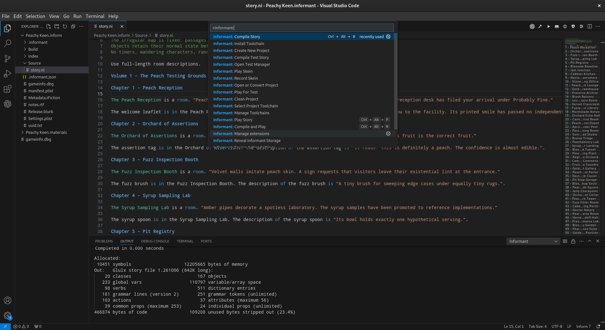
Command |
Purpose |
|---|---|
Informant: Create New Project |
Create a new Inform project. |
Informant: Open or Convert Project |
Open or convert an existing Inform project. |
Informant: Compile Story |
Compile the current story. |
Informant: Compile and Play |
Compile the current story and begin playing it. |
Informant: Play Story |
Play the current compiled story. |
Informant: Compile Test Story |
Build the story for the testing workflow. |
Informant: Play For Test |
Play and capture story interaction for testing. |
Informant: Record Skein |
Record a reusable interaction path. |
Informant: Play Skein |
Replay a recorded skein. |
Informant: Open Test Manager |
Open the test collection and playable manager. |
Informant: Show Build Errors |
Show errors from the current build. |
Informant: Open Documentation |
Open Inform documentation. |
Informant: Open Index |
Open the generated Inform Index. |
Informant: Install .i7x Extension |
Install an Inform language extension. |
Informant: Clean Project |
Remove generated build material. |
Informant: Install Toolchain |
Install an Informant compiler toolchain. |
Informant: Manage Toolchains |
Manage installed Informant toolchains. |
Informant: Select Project Toolchain |
Select the toolchain used by the current project. |
Informant: Reveal Informant Storage |
Reveal Informant’s managed storage location. |
Workspace Trust
Visual Studio Code may ask whether you trust a folder when it is opened for the first time. This is a normal Visual Studio Code security feature. If a project is opened in Visual Studio Code’s Restricted Mode, functionality that requires anything more complex than viewing code will be unavailable. Only mark a folder as trusted when you trust the files it contains and their source.
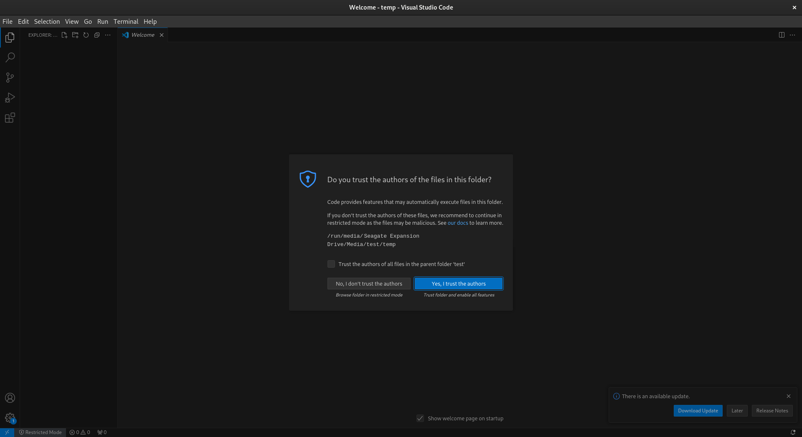
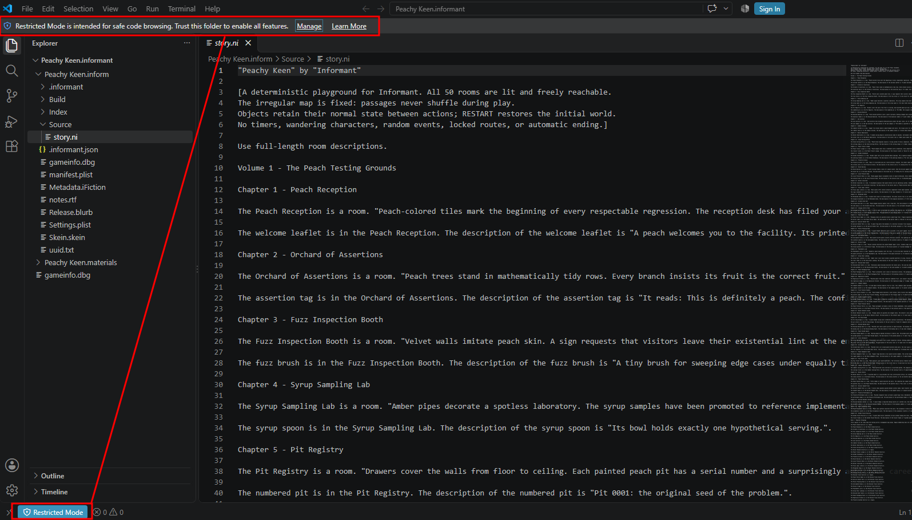
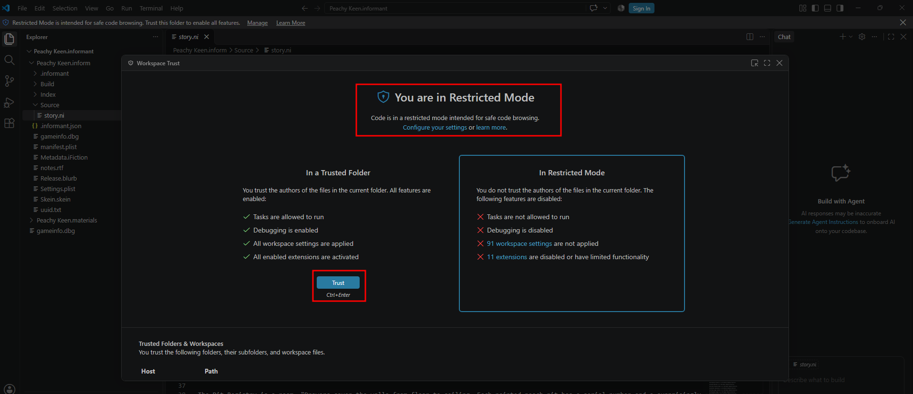
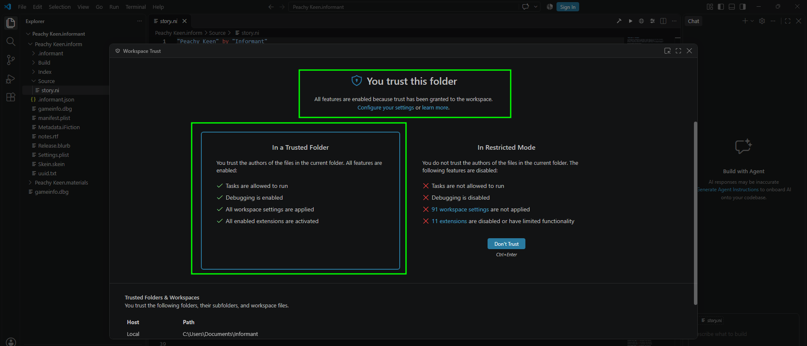
Installing A Toolchain
Informant uses self-contained toolchains rather than relying on an Inform installation elsewhere on the computer. A toolchain contains the native compiler programs and the supporting Inform files required by the compiler pipeline. For Inform 10, the principal compiler pipeline is:
inform7 -> inform6 -> inblorb
Use the following command:
Informant: Install Toolchain
in VSCode to install an available toolchain. Informant obtains the appropriate
toolchain archive, verifies it, extracts it into Informant-controlled storage,
and makes it available to projects. Note: On macOS, Informant uses the
operating system’s /usr/bin/curl for toolchain acquisition rather than OS
HTTP services. Hash verification, extraction, installation, and use of the resulting
package then follow the normal Informant toolchain workflow.
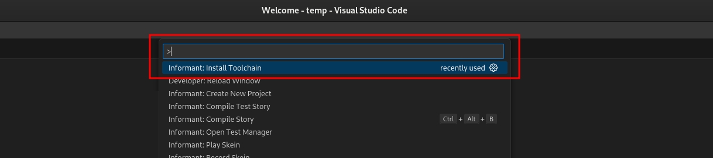
Most users will want to download the official Informant toolchain; however, it is also possible to install toolchains manually if you want to create your own custom toolkit. An example of using the download method is illustrated below.
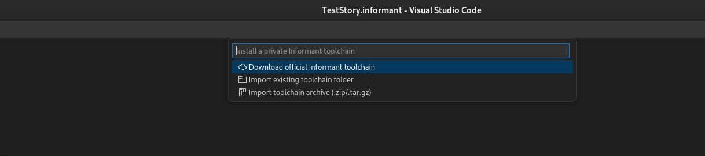
After selecting the download option, you will be presented with the latest toolchain available for your OS. Informant will always download the most recent production toolchain. If you wish to use an older toolchain, you can always obtain the kit you need from the Informant toolchain github (see below for links).
Informant toolchains can be thought of, at a high level, as the basic set of resources and programs required to deliver an Inform 7 IDE experience. Generally speaking, an Informant toolchain package is roughly equivalent to the contents of the standard Inform IDE distributions with the exception that it simply does not contain an IDE. For more information on Informant toolchains, how to reproduce them, or to use them in your own projects, please go to:
For completeness, here is a high-level view of the contents of a generic Informant toolchain package:
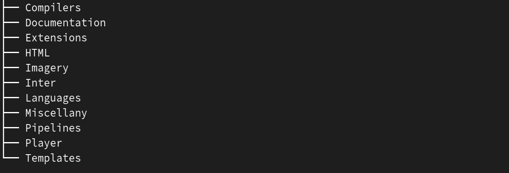
Creating Your First Project
Starting with a new project after you have installed Informant is a simple process very similar to the steps in the standard IDE. However, in the case of Informant you will use the VSCode palette command and follow the prompts to choose the location and name of the project.:
Informant: Create New Project
Informant creates the project structure required for an Inform work and opens the project in Visual Studio Code. The story source can then be edited in the normal Visual Studio Code editor. If Visual Studio Code asks whether the newly opened project folder should be trusted, review the folder and grant trust before compiling or running the story. Below is an image of the dialog box associated with creating a new project.
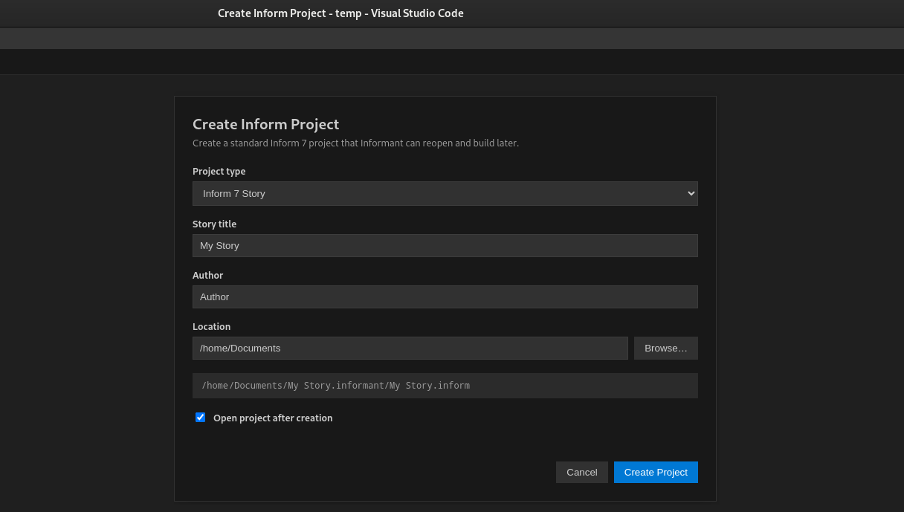
Once your new project is created, you will need to browse into the source folder and choose the story.ni file so you can begin editing. The image below shows the source folder open and the story.ni selected and opened for editing.
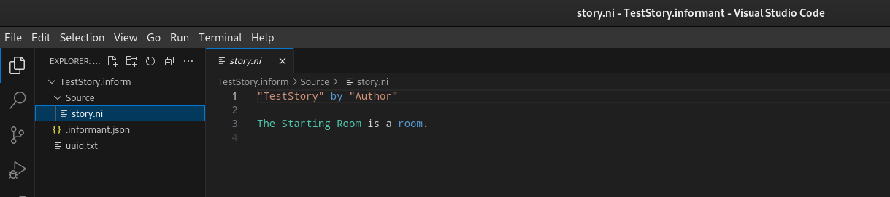
Quick Actions & Shortcuts
When you are editing source code using Informant, you will likely want to quickly compile your code, play your project, or perform many of the other Informant commands without needing to access the command palette. Informant allows you to pin your favorite commands to upper-right side of the editor window. One shortcut is always available in the right corner of the editor screen: Source Action Settings. Activating this opens a check box list that allows you to choose which shortcuts are pinned to the right corner of your editor screen. In practice the total number of shortcuts will vary depending on other extensions you may have installed, the resolution of your screen, and other factors. Experiment with the shortcuts and find a configuration that works best for your workflow! The image below illustrates the quick actions on the right side of the editor screen and the check box list that can be opened using the three-slider icon to the rightmost side of the quick action icon list.
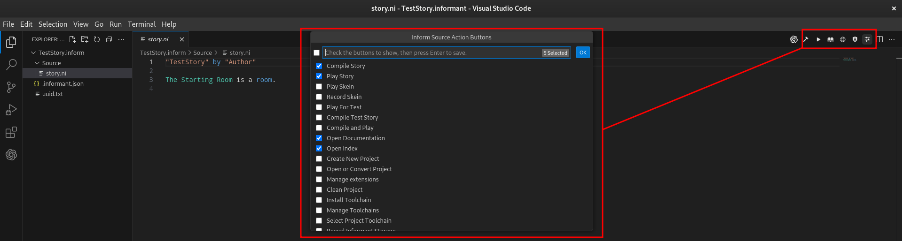
Projects
Opening A Project
Informant can open standard Inform projects in addition to Informant projects. When working with a standard Inform project, Informant will create a .informant folder alongside the .inform folder representing your project in order to allow you to use the various skein / vector / composition features of Informant. This folder can be deleted if you do not need it later. Use the following command to select an existing Inform or Informant project:
Informant: Open or Convert Project
Alternatively, you can also open a project directly by simply opening its folder. This method will bypass the option to convert the project to an Informant project. Many times this approach is used when using Informant for the first time.
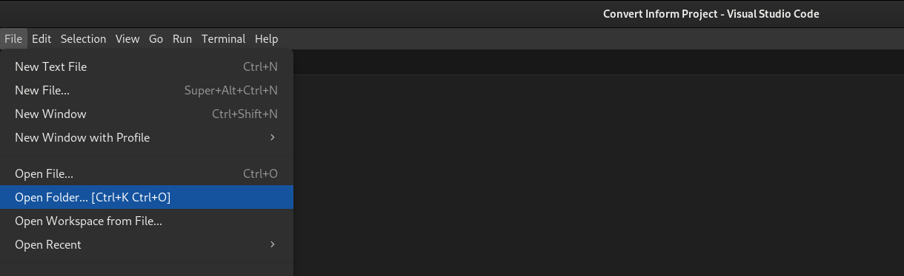
Understanding an Inform Project
When an Inform project is opened in Informant, its files and directories are displayed in the Visual Studio Code Explorer. This provides direct access to the normal structure of an Inform project rather than hiding the project behind a specialized editor interface.
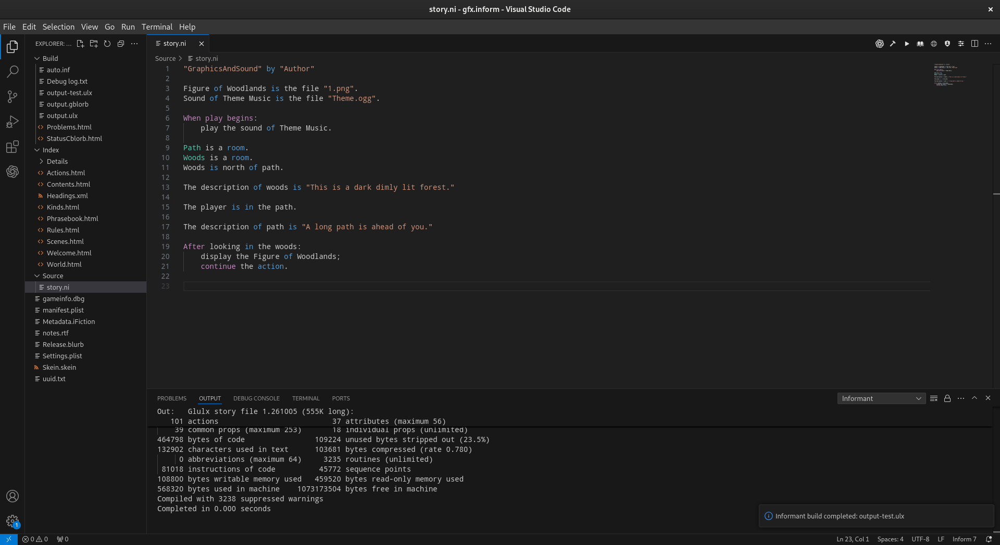
A typical project contains three primary directories:
Project.inform/
├── Build/
├── Index/
└── Source/
These directories contain the source text of the story along with files generated by Inform during compilation.
Source
The Source directory contains the Inform source code for the project. The
main source file is:
Source/
└── story.ni
story.ni is the primary source file for an Inform project. This is where
rooms, objects, actions, rules, descriptions, and the other elements of the
story are normally written. Informant opens and edits story.ni as a normal
text file in Visual Studio Code. In the example shown above, story.ni
contains a small story defining two rooms as well as an image and a sound resource.
Depending upon the project and the version of Inform being used, the
Source directory may also contain additional files maintained by Inform.
Build
The Build directory contains intermediate and final files produced while
the story is being compiled. In the example above it contains files such as:
Build/
├── auto.inf
├── Debug log.txt
├── output-test.ulx
├── output.gblorb
├── output.ulx
├── Problems.html
└── StatusCblorb.html
auto.inf is generated from the Inform source during compilation and is
used as input to the Inform 6 compiler. Story files such as output.ulx
and output.gblorb are compiled forms of the project. The exact files
present in Build depend upon how the project was compiled and packaged.
Inform also places diagnostic and status information in this directory.
Files such as Problems.html and StatusCblorb.html may therefore appear
as part of the build process. These are build products rather than the
author’s primary source text. In normal use they are generated and updated
by the Inform toolchain.
Index
The Index directory contains the Inform Index generated when the project
is compiled. In the example above it contains files such as:
Index/
├── Details/
├── Actions.html
├── Contents.html
├── Headings.xml
├── Kinds.html
├── Phrasebook.html
├── Rules.html
├── Scenes.html
├── Welcome.html
└── World.html
The Index is generated from the project and describes the structure Inform has discovered in the source. Among other things, it can provide information about the story world, actions, rules, scenes, kinds, phrases, and source headings. Informant can display this generated Index alongside the source code, allowing the author to move between writing the story and examining Inform’s analysis of it without leaving Visual Studio Code.
Other Project Files
An Inform project can also contain files at the project level. The example shown above includes:
gameinfo.dbg
manifest.plist
Metadata.iFiction
notes.rtf
Release.blurb
Settings.plist
Skein.skein
uuid.txt
These files are part of the surrounding Inform project and may contain project settings, release information, metadata, notes, debugging information, skein data, or other information used by Inform and its development tools. Not every project will contain exactly the same set of generated files. Some files appear only after particular build or release operations, and the contents of the project can vary between Inform versions.
Working With the Project in Informant
Although Visual Studio Code makes the entire project visible, authors will normally spend most of their time editing:
Source/story.ni
The remaining directories and files provide the supporting structure used by Inform to compile, analyze, test, and package the story. Making this structure visible is also useful when diagnosing a build, examining generated output, or working with different Inform toolchains. Informant does not require the project to be converted into a separate Informant-specific project format; the Inform project itself remains the project.
The Informant Project Structure
Informant can convert an existing Inform project into an Informant project. This conversion is nondestructive. Informant does not modify or replace the original Inform project. Instead, it creates a copy of the project using the Informant project directory structure, leaving the original project intact.
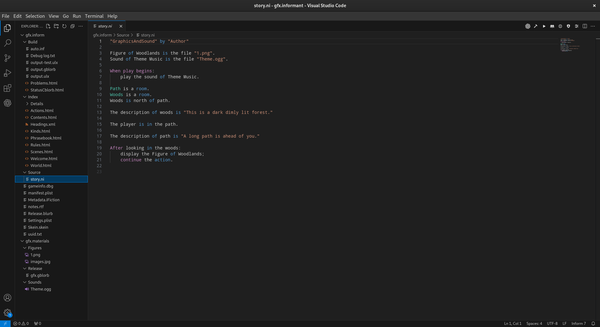
The screenshot above shows the same Inform project used in the previous example after it has been converted into an Informant project. At the top level, the Informant project brings the Inform project and its associated materials together:
Informant Project/
├── gfx.inform/
└── gfx.materials/
The gfx.inform directory contains the familiar Inform project structure.
Its Build, Index, Source, and other Inform files remain organized
as expected by Inform. The gfx.materials directory contains the resources
associated with the story:
gfx.materials/
├── Figures/
│ ├── 1.png
│ └── images.jpg
├── Release/
│ └── gfx.gblorb
└── Sounds/
└── Theme.ogg
A More Complete View of the Project
One of the benefits of the Informant project structure is that the source and
the materials belonging to the story are visible together in the Visual Studio
Code Explorer. In a traditional Inform project view, the author primarily sees
the contents of the .inform directory:
gfx.inform/
├── Build/
├── Index/
├── Source/
└── ...
After conversion, Informant presents the larger project:
Informant Project/
├── gfx.inform/
│ ├── Build/
│ ├── Index/
│ ├── Source/
│ └── ...
│
└── gfx.materials/
├── Figures/
├── Release/
└── Sounds/
This provides a more holistic view of the story. Source code, figures, sounds, generated Inform files, and release artifacts can all be reached from the same workspace. The relationship is particularly useful when working with multimedia. In the example above, the source contains:
Figure of Woodlands is the file "1.png".
Sound of Theme Music is the file "Theme.ogg".
The corresponding files are immediately visible in gfx.materials/Figures
and gfx.materials/Sounds. The author can therefore see both the source
declaration and the resources it refers to as parts of the same project.
Nondestructive Conversion
Converting an existing project to the Informant project structure does not alter the original project. Informant creates a separate copy for use with Informant and leaves the original Inform project intact. This makes it possible to bring an existing Inform project into Informant without sacrificing the original project or requiring it to be permanently migrated away from its existing form.
Converting Existing Inform Projects
Informant allows you to convert existing Inform projects to have the same structure as an Informant project. This process is non-destructive and the original Inform project remains as is. To perform the conversion, Informant makes a copy of the original inform project to create the Informant version. When you use the Open Project command, the option to convert the project is available if you are opening a standard Inform project.
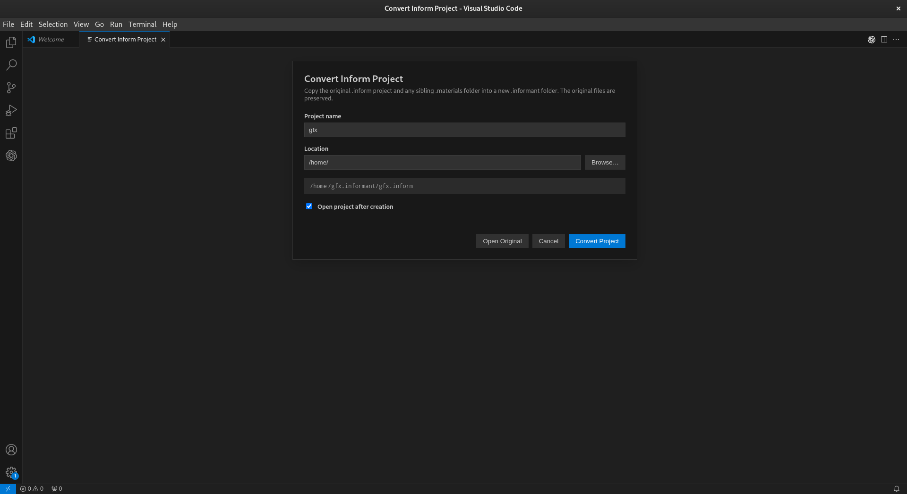
The primary difference between an Inform project and an Informant project is directory structure. Informant projects include the .materials folder in addition to the standard .inform project folder. The .informant folder acts as a container for both of these folders. This was done in order to allow for access to the .materials folder within the context of VSCode. This is helpful when working with or adding files to the materials folder while developing your project.
Saving A Project
Story source is edited and saved using the normal Visual Studio Code editing commands. Informant does not replace Visual Studio Code’s normal file editing and saving behavior.
Project State Details
An Informant project contains a .informant directory used to store
Informant-specific project state. Unlike the .inform and .materials
directories described above, the contents of .informant are maintained by
Informant and support features provided by the extension rather than by the
Inform compiler itself. Keeping this information in a separate directory
allows Informant to add project management and testing facilities without
altering the underlying structure of the Inform project.
.informant/
├── collections/
├── compositions/
├── test-vectors/
├── working/
└── informant.json
The informant.json file contains Informant project state and configuration.
The remaining directories contain data used by Informant’s recording and
testing system. In particular, test-vectors, compositions, and
collections provide the persistent representation of the tests displayed
and managed through the Informant Test Manager.
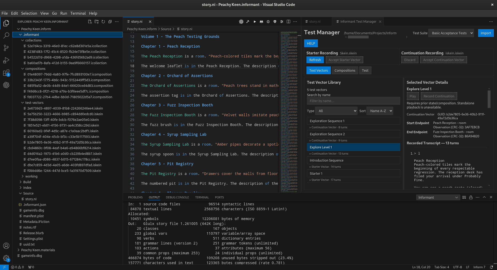
The test-vectors directory contains recorded test vectors. Each vector is
stored in an Informant-specific .iskein file. A test vector records a
sequence of player commands and the corresponding story interaction captured
during recording, allowing that sequence to be played again or used as part of
a larger test. The screenshot above shows these files in the Explorer while the
same recorded vectors appear in the Test Vector Library of the Test Manager.
Selecting a vector in the Test Manager exposes information about the recording,
including its endpoints and recorded transcript.
.informant/
└── test-vectors/
├── <guid>.iskein
├── <guid>.iskein
└── ...
The filenames use identifiers rather than the descriptive names displayed in the Test Manager. Informant maintains the relationship between the stored objects and their user-facing representation, so authors normally work with these recordings through the Test Manager rather than by editing the files directly.
The compositions directory contains .icomposition files. A composition
is an Informant-specific structure that combines recorded vectors into an
ordered playable sequence. This allows smaller recordings to be reused as
building blocks for longer interactions instead of requiring every complete
test path to be recorded independently.
.informant/
└── compositions/
├── <guid>.icomposition
├── <guid>.icomposition
└── ...
Compositions are managed through the Compositions portion of the Test Manager. The files in this directory are the persistent project data behind those compositions.
The collections directory contains .icollection files. Collections are
Informant’s organizational layer for grouping playables into test suites. They
allow related tests to be collected and selected as a unit when testing a
story.
.informant/
└── collections/
├── <guid>.icollection
├── <guid>.icollection
└── ...
In the screenshot above, the Test Manager has the Basic Acceptance Tests
suite selected. The collection data stored under .informant/collections is
what allows these project-specific test groupings to persist between Informant
sessions.
The .iskein, .icomposition, and .icollection file types are
Informant-specific XML formats. Together they form the persistent data model
used by Informant’s recording and testing facilities.
.iskein Recorded test vector
.icomposition Ordered composition of vectors
.icollection Collection of playables used as a test suite
These files are deliberately stored as part of the Informant project rather than inside the Inform source tree. This keeps Informant’s testing state separate from the files belonging to Inform itself while allowing the tests to travel with the Informant project.
The Test Manager provides the user-facing view of much of the information
stored beneath .informant. Recordings made while playing the story become
test vectors, vectors can participate in compositions, and playables can be
organized into collections for repeated testing. The Explorer therefore shows
the persistent files that make up the testing system while the Test Manager
presents those same concepts in a form intended for everyday use.
The distinction is useful when understanding an Informant project: the
.inform directory contains the Inform project, the .materials directory
contains resources associated with the story, and the .informant directory
contains the additional state Informant uses to manage and test that project.
Together they allow Informant to treat the source, resources, and behavioral
tests as parts of the same development environment.
Compiling And Playing
Compile Story
When you compile a story Informant invokes the selected project toolchain and drives
the Inform build pipeline. A successful release build ultimately produces the
playable story artifact, including .gblorb output where appropriate. Compiling
a story for general play is not the same as compiling a story for test. This is a
minor but important distinction. Compile for test has a different goal and enables
the use of Inform “test X with” behaviors. To compile the current project, use:
Informant: Compile Story
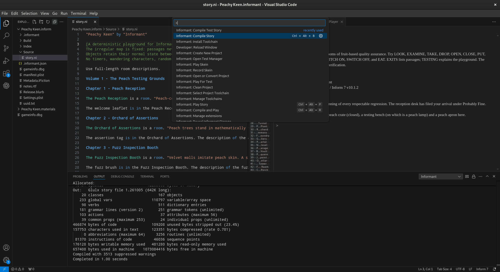
Compile And Play
Many times developers will want to compile and immediately play their interactive fiction work. There is a dedicated command for this action as it is quite common. When you want to build the current source and immediately begin playing the result, just use:
Informant: Compile and Play
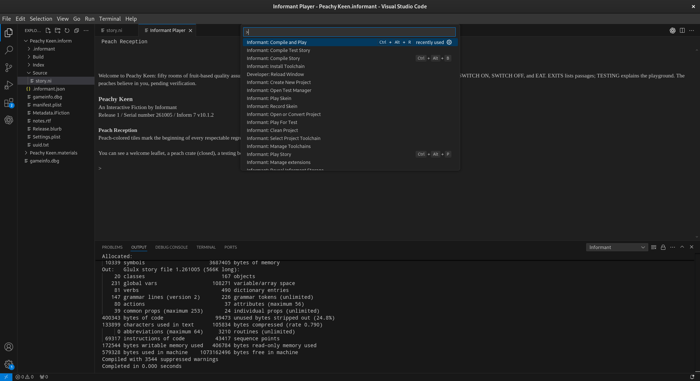
Play Story
Sometimes developers may want to play the current compiled story without recompiling from their source code. This comes up when the story is in an intermediate or incomplete state. To run the current story without recompiling, use:
Informant: Play Story
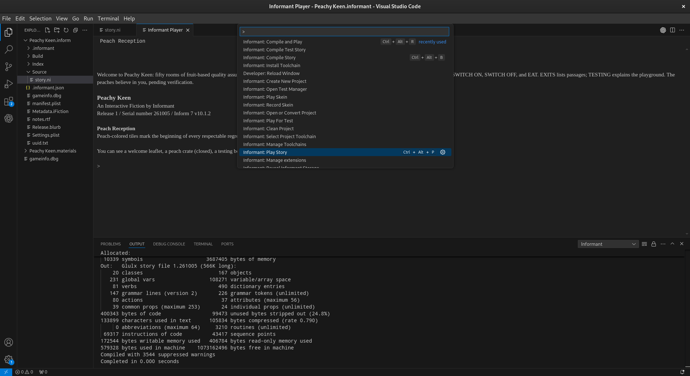
Build Errors
During development there will inevitably be build errors you will need to fix. As much as possible Informant works to parse these errors from the Inform compiler output and provide an easy to navigate enumeration of the errors that will take you directly to the line of source creating the error. It is important to note that compiler errors remain compiler errors: Informant presents the build information so that the source can be corrected in Visual Studio Code and compiled again. It does not correct errors for the user.
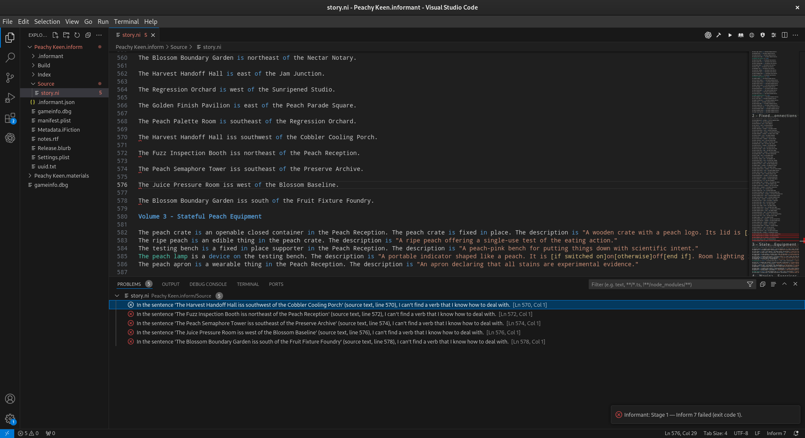
Cleaning A Project
Cleaning a project simply deletes the Inform build folder. To remove generated build material and prepare the project for a clean build just use:
Informant: Clean Project
Inform Documentation And Index
Inform Documentation
The standard Inform IDE has extensive documentation integrated into its workflow. That same documentation has been integrated into Informant as much as possible. Due to some limitations of VSCode there are differences in its overall presentation. Use the following command to open the Inform documentation in the development environment:
Informant: Open Documentation
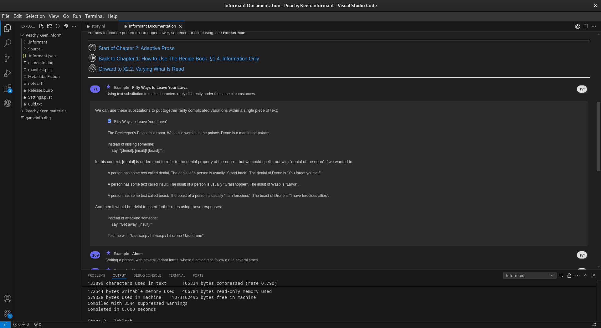
Inform Index
The Inform Index is produced by Inform and provides detailed information about the compiled world, including material derived from the story source. To open the index generated for the current Inform project, use the following command:
Informant: Open Index
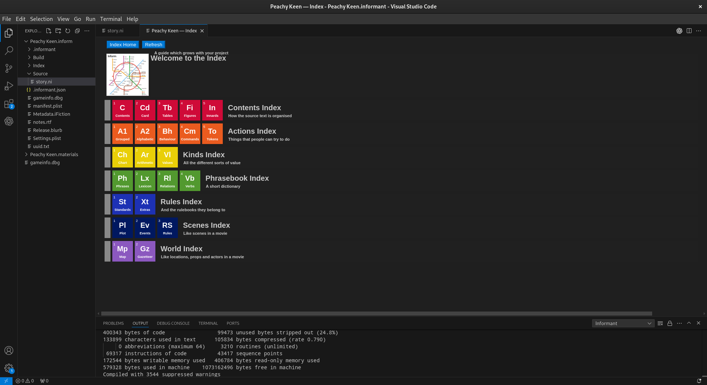
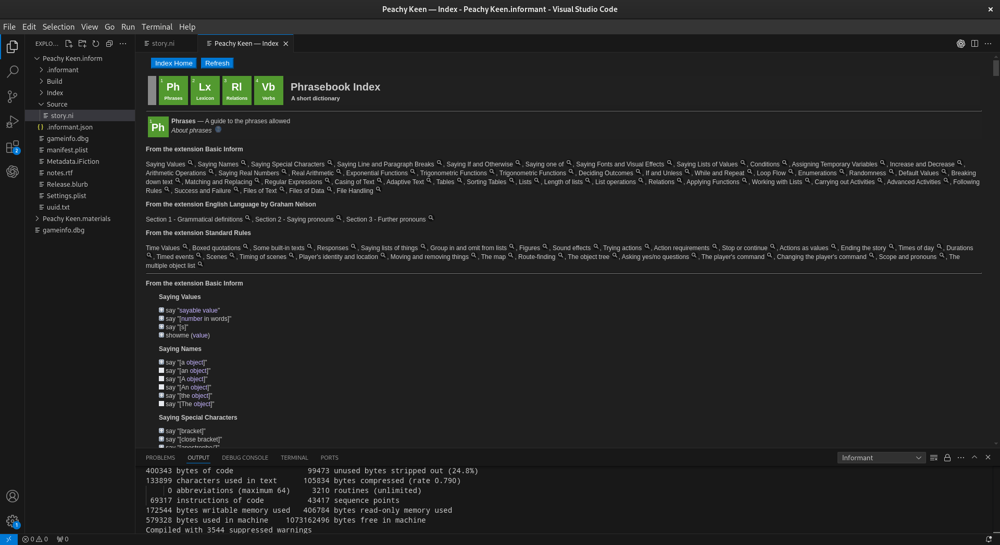
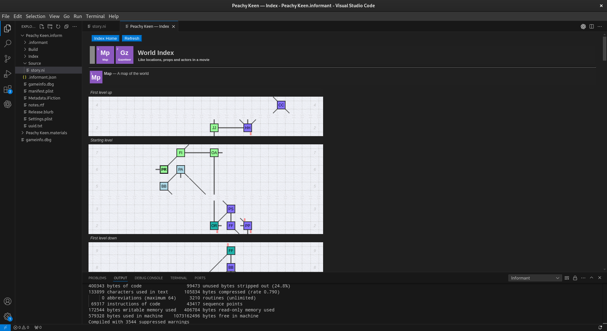
Inform Extensions
Inform extensions use the .i7x file format. To install an Inform extension for
use by the Inform development environment you can use the following command:
Informant: Install .i7x Extension
A descriptive catalog of various Inform extensions is available:
NOTE: This command is for Inform language extensions and should not be confused
with Visual Studio Code extensions. Informant itself is a Visual Studio Code
extension; an .i7x file extends Inform.
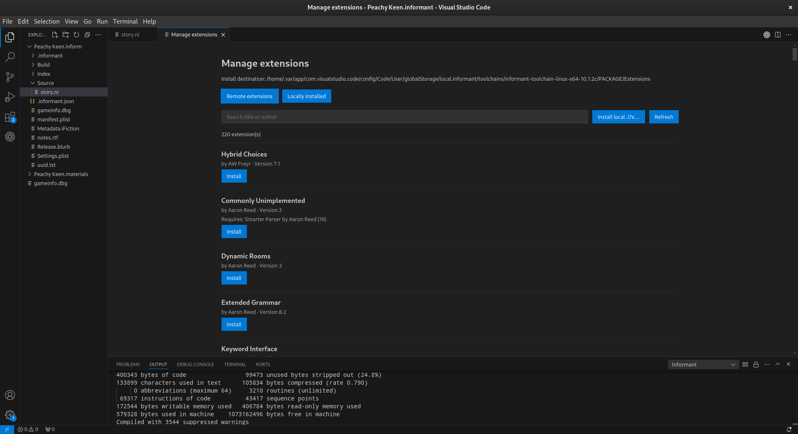
Types Of Extensions
There are a wide variety of extensions available for Inform. Conceptually it can be helpful to organize them into functional categories according to their primary purpose. Some extensions naturally overlap more than one area, so the categories should be treated as a browsing aid rather than as a strict classification of the Inform extension ecosystem. The broad categories are enumerated below and for detailed information about the extensions, please see the Inform7 Extension Guide located here: >link<
Conversations, Characters & NPCs
General Utilities & Miscellaneous
Multimedia: Graphics & Sound
Objects, Actions & Physical Interaction
Parser, Commands & Input
Release, Metadata & Licensing
Rules, Relations & Programming Utilities
Saving, Files & Persistence
Story Structure, Choice & Narrative
Testing, Debugging & Development
Text, Prose & Output
Time, Events & Turn Structure
User Interface, Windows & Typography
World Model, Rooms & Mapping
Skeins And Recorded Play
Inform’s Skein provides a visual history of play. It records commands as a branching structure, allowing an author to preserve different routes through a story and return to earlier points in a play session. Informant repurposes that existing structure as the source material for a testing model. The important change is not that Informant replaces the Skein. It does not. The Inform Skein remains the author’s original branching record of play. Informant interprets that record, breaks its paths into reusable pieces, and uses those pieces to construct persistent test vectors, compositions, and test collections. This gives the same recorded play two useful views. In the Inform IDE, the Skein is primarily a branching visual history. In Informant, that history can be translated into reusable behavioral test material.
The Skein in the Inform IDE
In the Inform IDE, a Skein can be read as a tree of commands. Play begins at a
common starting point and branches whenever different commands are recorded
from an earlier point. For example, a Skein may contain several routes beginning
at start:
start
/ \
look take all
/ \ |
take all ... open crate
| |
... ...
The diagram is useful because it shows both common history and divergence. Several complete routes through the story may share the same beginning, while later commands distinguish one route from another.
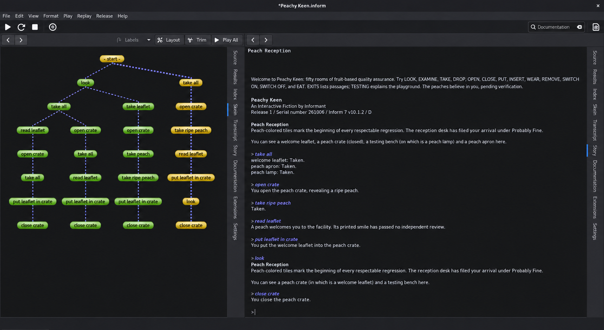
A Skein in the Inform IDE. Commands are represented as nodes in a branching history of recorded play.
Informant’s Interpretation of the Skein
Informant treats the Skein as more than a picture of a play session. The branching structure contains information that can be transformed into testing material. Rather than storing every complete root-to-leaf route as an unrelated block of commands, Informant can decompose the Skein into reusable pieces. Shared or independently meaningful portions become test vectors, while complete playable routes can be represented by compositions that refer to those vectors.
Conceptually, the transformation is:
INFORM SKEIN
|
v
Analyze branching paths
|
+-----------+-----------+
| |
v v
Test Vectors Compositions
reusable pieces playable routes
| |
+-----------+-----------+
|
v
Qualified Tests
|
v
Test Collections
This is a change in representation, not a loss of the original idea. The branching play recorded by Inform is retained as behavioral structure, but Informant expresses that structure in forms that are easier to reuse, combine, organize, and execute as tests.
Test Vectors: .iskein
The smallest persistent behavioral unit produced or used by Informant is a
test vector, stored as an .iskein file. A vector records a sequence of player
commands and the corresponding observed story output. Informant distinguishes
between vectors that can begin from a fresh story and vectors that continue from
an established state. A simple decomposition can therefore look like this:
original branch
|
+---------------+---------------+
| |
v v
Starter Vector Continuation Vector
begins the playable continues from an
sequence established endpoint
When a Skein branches, this separation prevents Informant from having to copy the same recorded material into every complete route. The imported Skein can instead become a set of pieces that describe the useful portions of its graph. In the example import shown here, Informant decomposed the Skein into one starter vector and four continuation vectors.
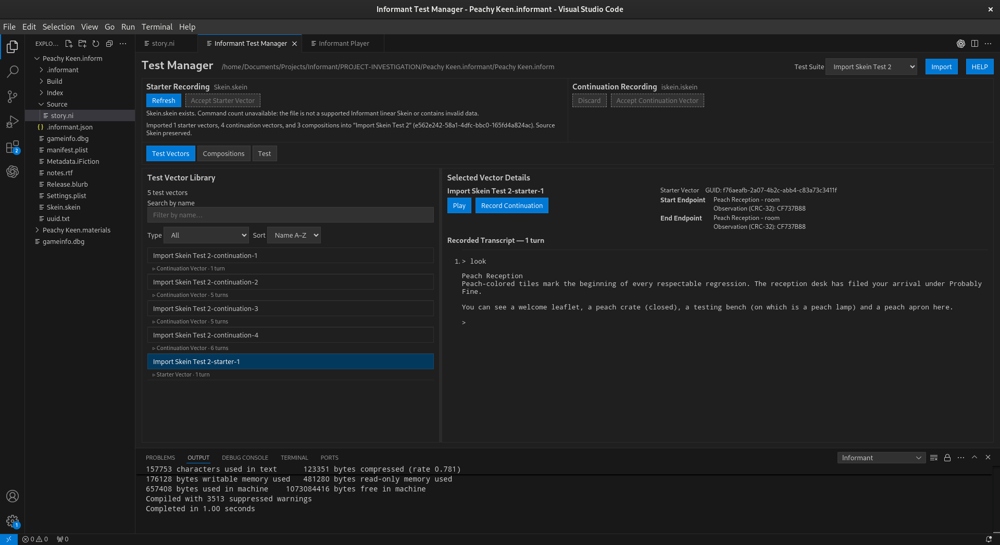
The Test Vector Library after Skein import. The original branching history has been decomposed into starter and continuation vectors.
Endpoints and Compatibility
A continuation is meaningful only in the correct story state. Informant therefore records endpoint information for vectors and uses that information when reasoning about how recorded pieces may connect. This distinction is important. Two vectors may appear structurally compatible without being proven behaviorally interchangeable. Informant can identify structural candidates and endpoint relationships, but structural similarity is not itself proof that two pieces of recorded play have the same behavioral meaning. The endpoint model allows Informant to preserve an important property of the original Skein: branches occur in a particular story context. A continuation is not merely a loose list of commands; it belongs after a state from which that continuation makes sense.
Compositions: .icomposition
Breaking the Skein into reusable vectors would not be sufficient by itself.
The complete routes through the original branching structure also matter.
Informant represents those routes as compositions, stored as
.icomposition files. A composition is an ordered sequence of vectors that
together describe a playable path.
For example:
+------------------+
| Starter Vector |
+--------+---------+
|
+---------+---------+
| |
v v
Continuation A Continuation B
| |
v v
Composition 1 Composition 2
The vectors preserve reusable pieces. The compositions preserve meaningful ways of putting those pieces back together. During the example import, Informant created three compositions from the branching Skein in addition to the five vectors. Those compositions correspond to complete playable routes reconstructed from the imported material.
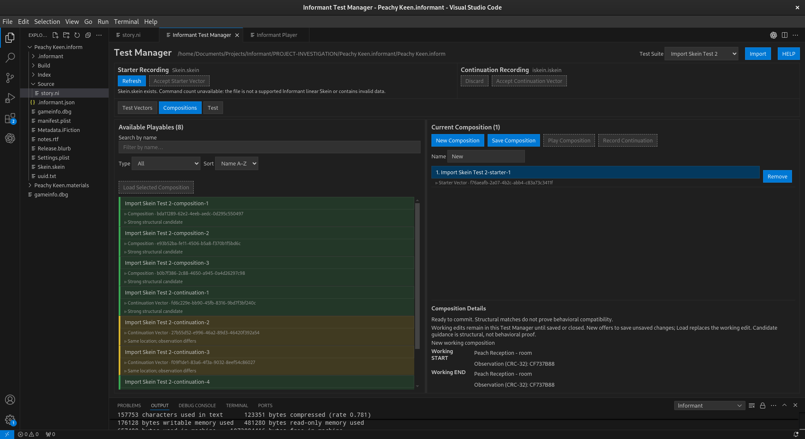
Imported compositions preserve complete playable routes through the decomposed Skein.
From Recorded Play to Executable Tests
A major consequence of the transformation is that suitable imported material can become executable regression tests. Informant’s Test view lists independent Playables with qualified start and end endpoints. A starter vector may qualify by itself. A composition may qualify when its ordered vectors form a complete playable route. Continuation vectors that depend on prior state do not become independent tests merely because they exist in the library. The relationship can be summarized as:
Inform Skein
|
v
+--------------+
| Decomposition|
+------+-------+
|
+-----+------+
| |
v v
.iskein .icomposition
vectors routes
| |
+-----+------+
|
qualified Playables
|
v
regression tests
|
PASS / FAIL result
In the example shown, the import produced four independently runnable tests: one starter vector and three compositions. Running all four against a fresh story produced four passing results.
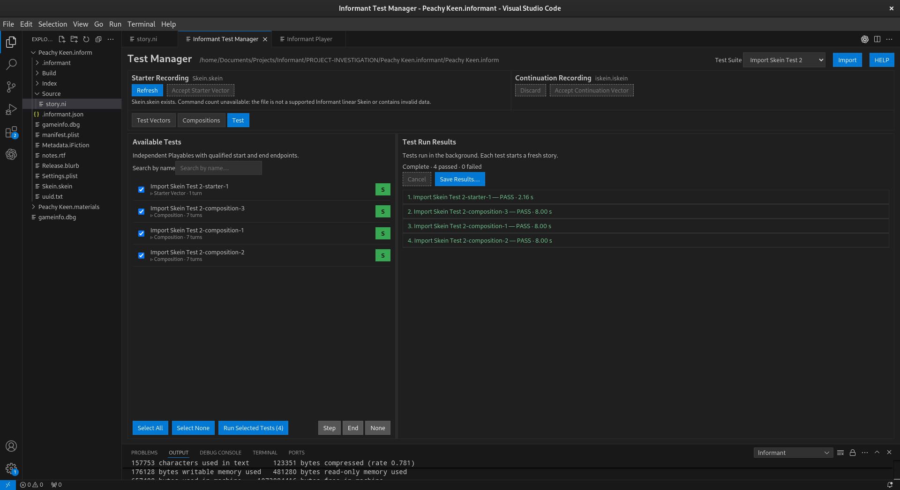
Imported Skein material used as executable tests. Each independent test begins with a fresh story and compares recorded behavior with current behavior.
This is the central repurposing of the Skein in Informant. A history that was originally useful for recording and revisiting play can also become a durable description of expected story behavior.
Collections: .icollection
Vectors and compositions describe behavior. Collections provide organization.
An Informant collection, stored as an .icollection file, groups Playables
into a named test suite. Collections make it possible to organize the tests
derived from recorded play according to the author’s needs rather than
according to the geometry of the original Skein. The relationship among the
three Informant formats is therefore:
.icollection
named test suite
|
+-------------+-------------+
| |
v v
.icomposition .iskein
ordered route complete vector
|
+-------+-------+
| |
v v
.iskein .iskein
vector vector
An .iskein is recorded behavioral material. An .icomposition combines
vectors into an ordered playable route. An .icollection organizes
Playables into a test suite. The collection is not another branch of the original
Inform Skein. It is a higher-level Informant organization built from the testing
material obtained from recorded play.
Two Views of the Same Recorded Play
The distinction between Inform and Informant can be summarized as follows:
Concept |
Inform IDE |
Informant |
|---|---|---|
Recorded play |
Displayed as a branching Skein |
Interpreted as behavioral test material |
Shared path |
Visible as common nodes in the tree |
Can be represented by reusable vectors |
Branch |
A route through Skein nodes |
Can be reconstructed as a composition |
Continuation |
Commands following an earlier Skein state |
A continuation vector tied to an endpoint |
Complete route |
A path through the Skein |
A qualified Playable that can become a test |
Organization |
Primarily the Skein’s branching geometry |
Named collections of Playables |
Verification |
Recorded history can be replayed |
Recorded behavior can be executed and compared as a regression test |
The Translation at a Glance
The complete conceptual progression is:
INFORM IDE
==========
Skein.skein
branching recorded play
|
| import and analyze
v
INFORMANT
=========
.iskein
test vectors
reusable recorded behavior
|
+-------------------+
| |
v v
starter vectors continuation vectors
\ /
\ /
+-------+-------+
|
v
.icomposition
ordered playable route
|
v
qualified Playable
|
v
executable test
|
v
.icollection
organized suite
This model lets Informant reuse work authors may already have performed while developing and playing their stories. The Skein remains recognizable as the source of that work, while Informant gives its branches a second life as persistent, composable, executable regression material.
Why Repurpose the Skein?
Interactive fiction testing has an unusual advantage: ordinary play naturally produces sequences of commands and observable responses. The Inform Skein has long provided a way to preserve that play as a branching history. Informant builds on that idea by treating recorded play as potential test evidence. The result is a bridge between exploration and verification. An author can record behavior while developing a story, import that behavior into Informant, retain reusable portions as vectors, preserve complete routes as compositions, organize useful Playables into collections, and execute qualified Playables as regression tests. In that sense, Informant does not discard the Skein model. It changes the question asked of it. The Inform IDE asks, in effect, “How did play get here, and what other branches were recorded?”
Record Skein
In the standard Inform IDE, a skein is generally recorded when you play your work using the player that is built into the Inform IDE. This generates a skein representative of the paths you have traversed during your game play. The skein is cumulative, allowing you to visualize various paths you have exercised during your development work. There are, however, some downsides to this approach. The most apparent is the ongoing skein pruning or trimming that must be performed to ensure that the skein does not become too large or even problematic for the normal functioning of the IDE. Despite these limitations the skein is very helpful in the creation of IF works. Informant takes the concept of the skein and adapts its behavior to fit a more test driven methodology. First and foremost, within the context of Informant, a skein only represents a single path of play through your game. That path starts at the beginning of the IF work and ends wherever you stop recording commands. A skein must be explicitly recorded. Skeins are not automatically recorded during game play. Your recorded skein acts as a temporary command sequence that you can play back over and over as needed. The concept of a branching skein does not exist in informant and instead, branching, alternative paths, etc… are the domain of several new concepts: iskein, icomposition, and icollection which will be described in more detail elsewhere in this documentation. For now, to record a skein you can use the command:
Informant: Record Skein
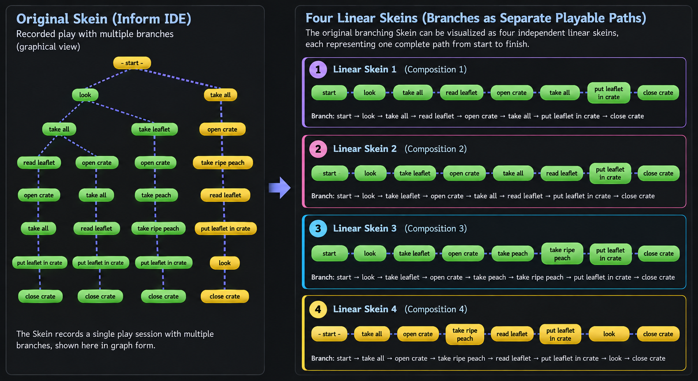
Play Skein
Skeins are especially useful for repeatedly reaching a particular part of a story while developing it. Use the following command to replay a previously recorded skein:
Informant: Play Skein
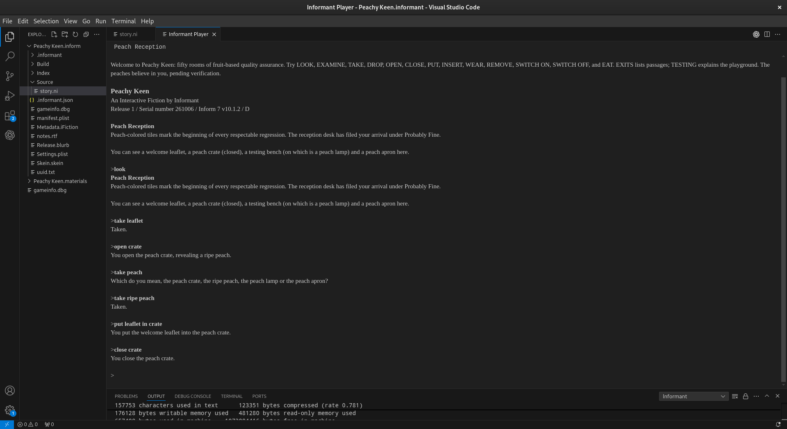
Testing
Interactive fiction presents a different testing problem from conventional software. A command is not evaluated in isolation. Its behavior depends upon the accumulated state of the story when the command is entered. The player’s location, inventory, object properties, scenes, counters, rules that have already fired, and other story state may all affect what happens next. Informant therefore does not attempt to reduce an interactive-fiction world to isolated deterministic commands. Instead, it records self-contained paths through the story, preserves useful portions of those paths as test vectors, and reconstructs longer paths when later behavior depends upon state created earlier in play.
The central principle is:
Informant treats recorded play as behavioral evidence.
That evidence begins with recording a Skein. A useful recorded path can become a starter vector. A starter can then be replayed to establish the state from which continuation vectors are recorded. Compositions join a starter with one or more compatible continuations. Endpoint qualification determines which resulting Playables can make meaningful regression assertions, while collections organize those Playables into testing strategies.
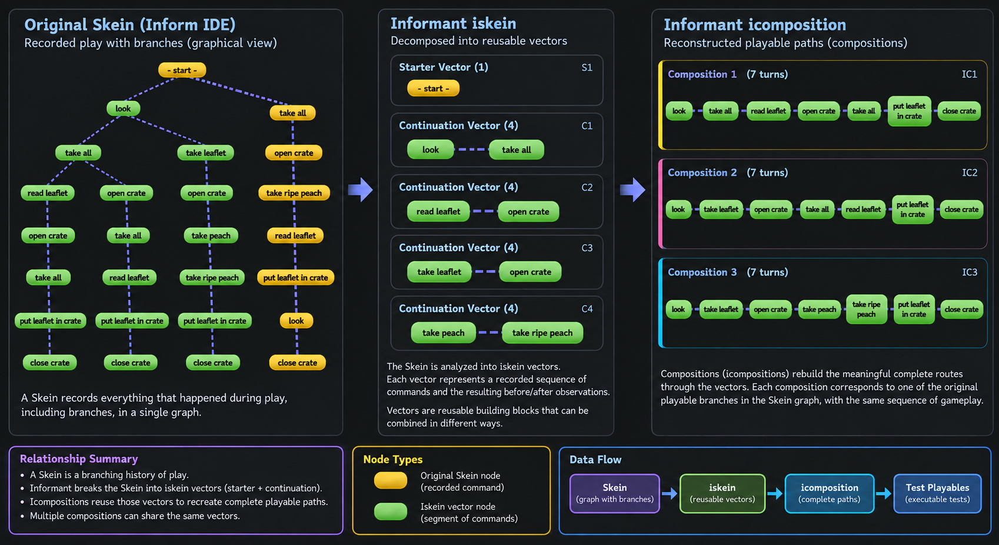
Compile Test Story
To do anything using the test manager you MUST build the project for testing. Building for testing also enables the use of “test X with” directives as well. To build the project for testing use the following command:
Informant: Compile Test Story
From Recorded Skein to Starter Vector
Record Skein is the beginning of Informant’s native recording workflow. It
generates the source material from which a starter vector can be created. The
author plays the story from its beginning and records a sequence of gameplay.
At this stage the recording is a candidate: the author can inspect the
recorded play and decide whether it represents a useful self-contained
behavioral path.
Conceptually:
BEGINNING OF STORY
|
v
Record Skein
|
v
recorded gameplay
|
v
review recording
|
v
Accept Starter Vector
|
v
.iskein
When the author accepts the recording as a starter vector, Informant saves it
as an .iskein. This distinction is important: recording produces the
source material; accepting the recording promotes that material into a
reusable Informant test vector.
A starter vector is self-contained gameplay beginning at the beginning of the story. Because its starting condition can always be recreated by starting a fresh story, a starter vector can be played independently at any time.
Starter Vectors Establish Reproducible State
A starter vector has a special role in the testing model because it establishes its own context:
FRESH STORY
|
v
Starter Vector
|
v
resulting state
The commands inside the vector are not interpreted as isolated operations. Together they represent a traversal from a reproducible origin to an observed story state. This gives Informant a reliable way to recreate the circumstances under which later gameplay occurred.
A starter vector is therefore both useful gameplay in its own right and a foundation from which additional recorded behavior can be developed.
Recording Continuation Vectors
Once a starter vector exists, Informant can use it to create continuation vectors. A continuation does not begin at the beginning of the game. Instead, the author first plays back an existing starter vector. That playback recreates the story state reached by the starter. Recording then continues from that state.
The workflow is:
FRESH STORY
|
v
play Starter A
|
v
state established by A
|
v
record continuation
|
v
review continuation
|
v
Accept Continuation Vector
|
v
continuation .iskein
The Test Manager exposes this workflow directly through its Starter Recording and Continuation Recording controls. A starter recording can be refreshed and accepted as a Starter Vector. After the required preceding state has been established, a continuation recording can be accepted as a Continuation Vector.
This makes continuation vectors deliberately different from starter vectors. A continuation contains useful recorded gameplay, but it is not independently playable because it does not establish its own starting state. Its commands assume that earlier gameplay has already placed the story in the required condition.
Starter and Continuation Vectors
Both starter and continuation vectors are stored as .iskein files, but
they have different roles.
A starter vector is independently playable:
beginning of game
|
v
Starter A
|
v
endpoint
A continuation vector depends upon preceding gameplay:
required prior state
|
v
Continuation B
|
v
endpoint
The distinction can be summarized as:
A starter vector begins at the beginning of the game.
A starter vector is self-contained and can be played independently.
Record Skeinprovides the source material from which a starter vector is accepted.A continuation vector begins from story state established by preceding gameplay.
A continuation vector is created by playing the required starter path and recording additional gameplay from the resulting state.
A continuation vector cannot be played independently.
This structure allows Informant to preserve useful sections of gameplay without duplicating the entire path from the beginning of the story every time a new behavioral segment is recorded.
Vectors as Recorded State Transitions
At a high level, an .iskein vector represents a transition between
observed conditions:
observed starting condition
|
v
recorded commands
|
v
observed resulting condition
For a starter vector, the starting condition is independently reproducible because the vector begins with a fresh story. For a continuation vector, the starting condition must first be established by preceding vectors.
Informant does not need to claim complete knowledge of every internal value in the Inform virtual machine. Instead, it works with observations at useful boundaries. A recorded endpoint represents a practical behavioral assertion:
After following this recorded path from the required starting condition, this is what was observed.
The important question is not whether every internal variable has exactly the same value. The useful regression question is whether a reproducible traversal still produces the behavior the author recorded and expects.
Compositions Reconstruct Complete Playable Paths
An .icomposition combines vectors into a complete Playable. Every
composition must begin with a starter vector. The starter establishes the
reproducible path from the beginning of the game. One or more compatible
continuation vectors can then extend that path.
For example:
Starter A
|
v
Continuation B
|
v
Continuation C
The complete composition is:
FRESH STORY
|
v
Starter A
|
v
Continuation B
|
v
Continuation C
|
v
endpoint
Neither Continuation B nor Continuation C needs to be independently playable. The composition supplies the context they require by placing them after the starter and preceding continuations that establish their starting states.
A composition is therefore more than an arbitrary list of vectors. Its order describes a valid path through accumulated story state. Informant assists the author during composition creation by color coding good continuation matches, helping identify continuation vectors whose recorded boundaries are suitable candidates for the path being assembled.
Structural compatibility is useful guidance, but the purpose of the completed composition is behavioral: to reconstruct a meaningful sequence of gameplay from a reproducible beginning to a useful endpoint.
Why Compositions Matter
Without compositions, every independently runnable recording would have to repeat all gameplay from the beginning of the story. That would discard the reuse made possible by continuation vectors.
Instead, Informant can factor recorded play into reusable pieces:
+--> Continuation B
|
Starter A -----------+--> Continuation C
|
+--> Continuation D
Those pieces can then participate in complete compositions:
Composition 1 = Starter A + Continuation B
Composition 2 = Starter A + Continuation C
Composition 3 = Starter A + Continuation D
Longer compositions can continue through multiple compatible continuation vectors. The important invariant remains the same: the first vector is always a starter, and every continuation depends upon the state established by the path before it.
Qualified Playables
The Test tab describes its candidates as:
Independent Playables with qualified start and end endpoints.
This is why the Test tab does not simply display every .iskein. A starter
vector can be an independent Playable because it begins at the beginning of
the story. A continuation vector cannot appear as an independent test merely
because it contains recorded commands; it requires preceding state. A
composition can become an independent Playable because its required starter
and continuations together reconstruct the complete path.
Conceptually:
recorded Skein
|
v
Starter Vector --------------------+
| |
| v
| independent Playable
|
+--> Continuation Vector(s)
|
v
Composition
|
v
independent Playable
|
v
TEST
Endpoint qualification adds another layer to this decision. Informant records
information about what is known at the boundaries of the Playable. The
Step, End, and None classifications shown by the Test Manager make
that endpoint information visible. Their precise rules are described with the
endpoint model, but their methodological purpose is important here: endpoint
qualification determines what Informant is entitled to assert about the place
where a recorded traversal begins or ends.
Testing Observations Rather Than Implementations
Informant’s regression model is based on observable behavior. A story may contain hundreds or thousands of internal values involved in producing a response, but a behavioral regression test need not depend upon those implementation details.
Conceptually, Informant asks whether this relationship still holds:
reproducible starting condition
|
v
recorded traversal
|
v
expected observation
For a starter test, the reproducible condition is the beginning of a fresh story. For a composition, the starter and its continuations collectively reconstruct the recorded traversal from that same reproducible origin.
This is behavioral regression testing. It tests the observable consequences of recorded gameplay rather than attempting to prove that every internal detail of the story is unchanged.
Nondeterminism and the Limits of an Assertion
Interactive fiction can contain intentionally variable behavior. Random events, alternative descriptions, state-dependent text, and other sources of variation can make some observations inappropriate for strict literal comparison. Informant does not need to deny this nondeterminism in order to provide useful regression testing.
Recorded interactive behavior can contain regions with different degrees of reproducibility:
INTERACTIVE STORY
|
+---------+---------+
| |
v v
stable observable variable behavior
behavior
| |
v v
strong regression weaker or
checkpoint inappropriate
literal checkpoint
A stable observation can provide strong regression evidence. An intentionally variable observation may provide weaker evidence or may be unsuitable for a strict checkpoint. Nondeterminism therefore defines the limits of an assertion; it does not invalidate the overall testing model.
The author remains an important part of test design. Record Skein captures
actual play, but the author decides whether the resulting recording is useful
enough to accept as a starter vector. The author can then deliberately extend
that known path with continuation recordings and assemble those pieces into
compositions representing meaningful scenarios.
The Recording and Testing Methodology
The complete native workflow can be summarized as:
PLAY FROM THE BEGINNING
|
v
Record Skein
|
v
candidate recording
|
v
Accept Starter Vector
|
v
starter .iskein
|
+----------------------+
| |
v v
independent Playable play starter back
|
v
established state
|
v
record continuation
|
v
Accept Continuation Vector
|
v
continuation .iskein
|
v
.icomposition
starter + continuation(s)
|
v
qualified Playable
|
v
regression test
This workflow is intentionally incremental. A useful path through the story becomes a starter. The starter becomes a reproducible foundation for recording later behavior. Continuations preserve those later segments without requiring the entire earlier path to be duplicated. Compositions restore the complete context when those segments need to be executed as an independent Playable.
Collections and Testing Intent
An .icollection operates above the recording and composition mechanism. A
collection does not make a continuation independently playable and does not
supply missing behavioral context. Instead, it organizes meaningful Playables
according to the author’s testing intent.
For example:
COLLECTION: Peach Crate
open-crate-happy-path
take-ripe-peach
store-leaflet
close-crate
Another collection might select a broader group of Playables for release verification:
COLLECTION: Release Smoke Tests
startup
inventory
navigation
peach-crate
ending
The three Informant file abstractions therefore serve distinct purposes:
.iskeinRecorded behavioral material. An
.iskeinmay be a self-contained starter vector or a continuation vector whose starting state depends upon preceding gameplay..icompositionA complete playable path beginning with a starter vector and followed by one or more compatible continuation vectors.
.icollectionOrganization of Playables according to testing intent and strategy.
Independent Test Execution
Each independent test begins with a fresh story. This is a direct consequence of the starter-vector model. Whether the selected Playable is a starter by itself or a composition containing a starter and continuations, its complete execution begins from the beginning of the game.
Thus independent tests behave conceptually as:
fresh story -> Starter A --------------------------> PASS
fresh story -> Starter B -> Continuation C -------> PASS
fresh story -> Starter D -> Continuation E
-> Continuation F --------> PASS
One test therefore does not silently inherit the state left behind by another. This is intentionally different from executing every test as one continuous story session, where a side effect introduced by an earlier test could alter the result of a later test.
What a Passing Test Means
A successful Informant test run is regression evidence, not proof that the entire story is correct. When the Test Manager reports that a set of tests passed, the useful interpretation is:
The independently runnable Playables began from reproducible starting conditions, traversed their recorded command sequences through the required starter and continuation vectors, and reached observations consistent with their recorded expectations.
This is deliberately narrower and more defensible than claiming that the entire story has been proven correct.
Methodology Summary
Informant builds regression tests from recorded gameplay rather than treating
individual commands as isolated test cases. Record Skein captures a
candidate self-contained path beginning at the start of the game. Accepting
that recording creates a starter .iskein that can be played independently.
Playing a starter recreates a known story state from which additional
continuation .iskein vectors can be recorded. Continuations are reusable
segments but cannot be played independently because they do not begin at the
start of the game.
An .icomposition restores the complete context by beginning with a starter
vector and extending it with one or more compatible continuation vectors.
Informant assists composition creation by identifying and color coding good
continuation matches. Endpoint qualification further describes what is known
at the boundaries of the resulting Playable. .icollection files then
organize meaningful Playables into broader testing strategies.
The result is a testing methodology suited to stateful interactive fiction:
Record a reproducible path, preserve reusable transitions, reconstruct the context they require, and make regression assertions only where the recorded boundaries justify them.
Choosing A Verification Type
Informant separates the construction of a Playable from the way that Playable is verified. Starter and continuation vectors describe how a path through the story is constructed. The verification style belongs to the completed, independently playable test.
Only two kinds of Playable can have a verification style:
a Starter Vector, because it begins at the beginning of the game and can be played independently; or
a Composition, because it begins with a Starter Vector and reconstructs a complete path using any required Continuation Vectors.
Continuation Vectors do not have independent Step, End, or None
verification styles. They are reusable structural components whose required
starting state is supplied by the Starter Vector and any preceding
Continuation Vectors in a Composition.
For example:
Starter A [Step]
and:
Composition B [End]
|
+-- Starter A
+-- Continuation 1
+-- Continuation 2
are independently playable tests with verification styles. The Continuation Vectors inside Composition B do not carry separate verification styles.
The choice between Step, End, and None expresses how the author
wants the completed Playable to participate in regression verification. It
allows a test to reflect the difference between deterministic behavior,
legitimate variation, and gameplay that is useful to execute without treating
every observation as a regression assertion.
Case 1: Step – The Journey Is Evidence
Consider a deterministic puzzle in which the player unlocks a display case, opens it, takes a ruby, and checks inventory:
> unlock display case with brass key
You unlock the display case.
> open display case
You open the display case.
> take ruby
Taken.
> inventory
You are carrying:
a brass key
a ruby
Suppose this sequence is represented by an independently playable Composition:
Composition: Acquire the Ruby [Step]
|
+-- Starter: Reach the Gallery
+-- Continuation: Unlock the Display Case
+-- Continuation: Take the Ruby
The verification style belongs to Acquire the Ruby as a whole. It does not
belong separately to Unlock the Display Case or Take the Ruby.
Step is appropriate when the behavior along the completed path is expected
to be stable and those observations are useful regression evidence. The author
cares not only that the Playable eventually reaches its destination, but that
the expected interaction continues to occur as the route is traversed.
Conceptually:
START
|
v
unlock case ---> expected behavior
|
v
open case ---> expected behavior
|
v
take ruby ---> expected behavior
|
v
inventory ---> expected behavior
Use Step when the journey itself is evidence.
Step is particularly useful for stable puzzle solutions, command sequences, object interactions, conversations with predictable responses, and other gameplay where intermediate behavior is intentionally repeatable.
Case 2: End – The Destination Is Evidence
Now consider a journey through an enchanted forest. The route is valid and repeatable, but the story deliberately varies some atmospheric responses:
> north
A crow erupts from the branches.
> north
Rain rattles suddenly through the leaves.
> east
Something small moves through the ferns.
> enter tower
Moon Tower
A circular stone chamber surrounds you. A silver bell
stands upon a pedestal.
On another valid run, the same gameplay might include different incidental responses, while still ending at Moon Tower. The author does not want legitimate variation during the journey to make the test unreliable. What matters is that the completed Playable reaches the stable destination.
The test might therefore be constructed as:
Composition: Reach Moon Tower [End]
|
+-- Starter: Enter the Forest
+-- Continuation: Cross the Forest
+-- Continuation: Enter the Tower
The End style applies to Reach Moon Tower as a complete Composition.
It is not assigned separately to Cross the Forest or Enter the Tower.
Conceptually:
START
|
v
variable behavior
|
v
variable behavior
|
v
variable behavior
|
v
MOON TOWER ---> useful stable endpoint
Use End when the destination is evidence.
End is useful when a Playable crosses intentionally variable material but is expected to arrive at a stable and meaningful result.
Case 3: None – Do Not Invent Evidence
Some Playables are useful even when the author does not want their observations to serve as verification evidence. Imagine a procedural dream sequence whose locations, descriptions, characters, or events deliberately vary. The sequence may still be useful to preserve and replay, but its output may not provide a reliable regression assertion.
For example:
Starter: Experience the Dream [None]
or:
Composition: Dream Passage [None]
|
+-- Starter: Go to Sleep
+-- Continuation: Traverse the Dream
+-- Continuation: Wake
The Continuation Vectors remain parts of the Composition. None belongs to
the completed Dream Passage Playable.
Choosing None does not mean that the gameplay is unimportant. It means
that the author is deliberately declining to treat the Playable’s observations
as the kind of evidence represented by the other verification styles. This is
preferable to manufacturing a fragile assertion around behavior that the story
was designed to vary.
Use None when the Playable is useful, but its observations should not be treated as verification evidence.
Three Different Testing Intentions
The three styles can be summarized in terms of what the author intends to claim about the complete Playable:
STEP
The journey is evidence.
Stable behavior along the Playable matters.
END
The destination is evidence.
Intermediate variation may be legitimate, while the completed
Playable is expected to reach a useful stable endpoint.
NONE
Do not invent evidence.
The Playable is useful, but its observations are not being used as
the corresponding regression assertion.
The verification style should therefore be chosen according to the behavior the story promises, not simply according to how much recorded output is available.
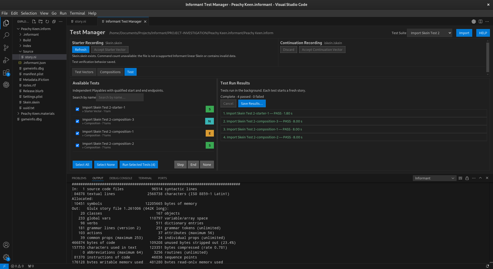
Creating Reliable Tests
A reliable Informant test should assert behavior that the author genuinely expects the story to preserve. The goal is not to maximize the amount of recorded material being compared. The goal is to select useful invariants in a stateful and sometimes deliberately variable interactive experience.
A useful rule is:
Test the behavior the story promises, not every behavior the story happens to produce.
Choose Purposeful Playables
A good Starter or Composition should represent a behavior the author can describe clearly: acquire an object, solve a puzzle, reach a location, complete a conversation, activate a machine, trigger a scene, or reach an ending.
Ask:
What do I expect this completed Playable to demonstrate?
If the answer concerns stable behavior throughout the traversal, Step may
be appropriate. If the route may vary but its result should remain stable,
End may be the stronger test design. If neither observation is a reliable
assertion, None avoids turning legitimate variation into noise.
Keep Starter Vectors Focused
A Starter Vector establishes reproducible state from the beginning of the game. Prefer a Starter that establishes a useful common foundation rather than duplicating a long path for every later scenario:
+--> Continuation: test vault
|
Starter: reach lab --+--> Continuation: test machine
|
+--> Continuation: test specimen
The Starter can be played to recreate its known state, after which different Continuation Vectors can record the behaviors that branch from it.
Do Not Over-Assert
More verification does not automatically make a stronger test. If a Playable contains behavior that is intentionally variable, demanding deterministic evidence from that variation can create a test that fails while the story is working correctly.
Choose the verification style according to the strongest reliable claim the completed Playable can support:
choose
Stepwhen stable behavior throughout the path matters;choose
Endwhen intermediate variation is acceptable but the final result provides useful evidence; andchoose
Nonewhen the Playable should not make that verification claim.
A test that asserts less, but asserts something genuinely stable, can provide better regression evidence than a test that attempts to verify everything.
Treat Repeated Instability as Information
If a test produces different results repeatedly without a corresponding source
change, investigate whether the test is asserting behavior that was never
intended to remain constant. A Playable whose journey is too variable for
Step may still have a useful stable endpoint for End. A Playable
without a suitable stable assertion may still be worth retaining with
None.
The verification style should describe the nature of the interactive experience rather than forcing the experience to conform to the test.
Prefer Meaningful Behavioral Boundaries
Useful Playables tend to end at meaningful changes in the fictional world: an object has been acquired, a door has been unlocked, a room has been reached, a conversation has completed, a scene has begun, a puzzle has been solved, a machine has been activated, or an ending has been reached.
These boundaries make it easier to understand what a test protects and why a failure matters.
Keep Independent Tests Independent
A Starter begins at the beginning of the game, and a Composition begins with a Starter. Consequently, an independently runnable test contains the context it needs to reproduce its own path:
fresh story -> Starter A --------------------------> PASS
fresh story -> Starter B -> Continuation C -------> PASS
fresh story -> Starter D -> Continuation E
-> Continuation F --------> PASS
One test should not depend upon another test having run first. Required setup belongs inside the Starter and Continuation structure of the Playable itself. This keeps failures reproducible and prevents execution order from silently becoming part of the test.
A Practical Rule
When choosing a verification style for a Starter or Composition, ask what the completed Playable is intended to prove:
Does the behavior along the path need to remain stable?
Choose Step.
May the journey vary while the destination must remain stable?
Choose End.
Would verification turn legitimate variation into a false failure?
Choose None.
The distinction is not between important and unimportant gameplay. It is between different kinds of evidence.
Step says that the journey is evidence. End says that the destination
is evidence. None says that the Playable remains useful, but Informant
should not invent evidence where the interactive experience does not provide
a reliable assertion.
Toolchains
Informant uses self-contained toolchains rather than depending on an Inform installation elsewhere on the computer. The VS Code extension and compiler environment are distributed separately, allowing Informant to install and manage the Inform environment used by a project without changing another Inform installation on the system.
An Informant Toolchain contains the native compiler programs together with the Inform resources, documentation, extensions, templates, and player components needed for the normal development workflow. Toolchains are available for each supported operating system and share the same general package organization.
At a high level, a toolchain contains:
PACKAGE/
|
+-- Compilers/
+-- Documentation/
+-- Extensions/
+-- HTML/
+-- Imagery/
+-- Inter/
+-- Languages/
+-- Miscellany/
+-- Pipelines/
+-- Player/
+-- REDIST/
+-- Templates/
The exact contents can vary between releases, but each directory has a clear role in providing the complete Inform development environment used by Informant.
Toolchain Components
Compilers/Contains the native
inform7,inform6, andinblorbprograms for the target operating system. These programs provide the principal compile and release pipeline used by Informant.Inter/andPipelines/Contain Inform’s kits and processing definitions used by the compiler. These resources form part of the version-matched Inform environment.
Extensions/andLanguages/Provide the standard Inform extensions and language resources included with the selected Inform release. Extensions installed separately by the user remain distinct from those supplied by the toolchain.
Documentation/andImagery/Provide Inform documentation and supporting images used by the documentation and generated Index.
Templates/,HTML/, andMiscellany/Provide release templates, web presentation resources, Index resources, and other supporting material used by Inform during compilation and release.
Player/Contains the Quixe/GlkOte browser-player resources used by Informant for integrated Glulx playback.
REDIST/Contains redistribution and licensing material for components included in the packaged toolchain.
Compilation
For Inform 10, the principal compiler pipeline can be summarized as:
Inform 7 source
|
v
inform7
|
v
generated Inform 6 source
|
v
inform6
|
v
story file
|
+------> inblorb for packaged release output
The compiler programs work with the surrounding kits, extensions, languages, pipelines, and release resources. Informant therefore manages the toolchain as a complete package rather than as a collection of independent executables.
Platform Packages
Informant provides toolchain packages for Windows, macOS, and Linux. The
overall package organization is consistent across platforms, while the native
programs in Compilers/ are built for the operating system and architecture
of each package.
The macOS toolchain is distributed as a universal package supporting Intel and Apple silicon. Windows and Linux use their corresponding native x86-64 packages.
Installing a toolchain does not replace or modify another Inform installation. Informant stores its managed toolchains separately and uses the toolchain selected for the current project.
Versioned Environments
A toolchain represents a matched Inform environment. Its compiler programs and supporting resources belong to the same toolchain release, giving Informant a predictable set of files to use when compiling, playing, documenting, and releasing a project.
Conceptually:
Informant
|
v
selected toolchain
|
v
PACKAGE/
|
+-- compiler programs
+-- Inform kits and pipelines
+-- standard extensions and languages
+-- documentation and imagery
+-- release resources
+-- integrated player
This separation also allows more than one toolchain to be installed. A project can select an appropriate installed toolchain without requiring a system-wide change to Inform.
Toolchain Sources and Releases
Informant toolchains are assembled from the Inform ecosystem and packaged for use by Informant. Build automation, source information, and downloadable releases are maintained in the Informant toolchain repository:
The toolchain is distributed separately from the Informant VS Code extension. Licensing information for Informant and the components used by the toolchain is provided in the Licensing section of this documentation.
Install Toolchain
To obtain and install a toolchain supported by Informant use:
Informant: Install Toolchain
Manage Toolchains
To inspect and manage the toolchains currently available to Informant use:
Informant: Manage Toolchains
Informant Storage
To open the location where Informant maintains its managed application data, including installed toolchain material use:
Informant: Reveal Informant Storage
The storage area is managed by Informant and is separate from an Inform installation that may already exist elsewhere on the computer.
Resources
The following resources provide online help for Visual Studio Code, Visual Studio Code extensions, Inform, and interactive fiction development.
Visual Studio Code
Inform
Informant
Informant-specific project, issue, release, and online-help links should be listed here once their public release locations are finalized.
Licensing
Overview
Informant and the Inform toolchain are separate software components. Informant-managed toolchains contain software originating from the Inform project and remain subject to the licenses supplied with those components.
Informant VSCode Plugin
The Informant VS Code extension is free software released by OpcodeASM under the
GNU General Public License, version 3 only (GPL-3.0-only). You are free
to use, study, modify, and redistribute Informant under the terms of
that license. The complete license terms are provided in the LICENSE
file distributed with Informant.
Informant Inform Toolchain Software Bill of Materials
The optional Informant Inform 7 Toolchain is a curated distribution of supporting components, each of which remains subject to its respective copyright and license terms.
Component |
Role |
License |
|---|---|---|
Inform 10.1.2 |
Inform compiler and supporting toolchain resources |
Artistic License 2.0, except where otherwise stated |
Inweb 7.2.0 |
Inform build and development tooling |
Artistic License 2.0 |
Intest 2.1.0 |
Inform testing and build tooling |
Artistic License 2.0 |
Inform Website |
Inform documentation and supporting resources |
Artistic License 2.0 |
Quixe / GlkOte |
Browser-based Glulx interpreter and player components |
MIT License |